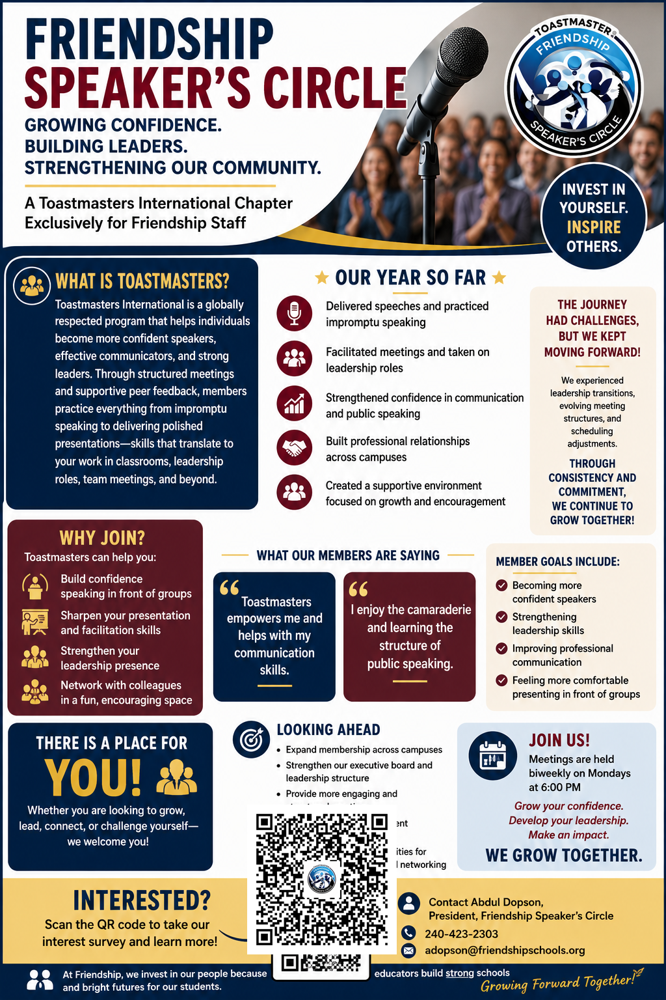
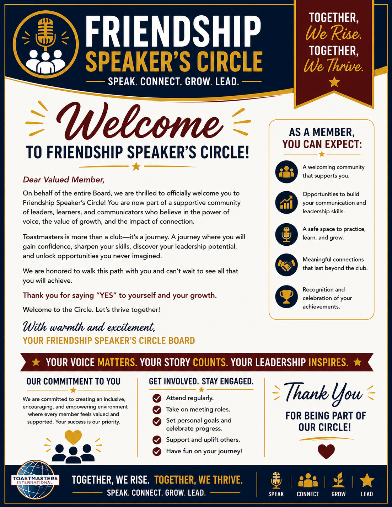
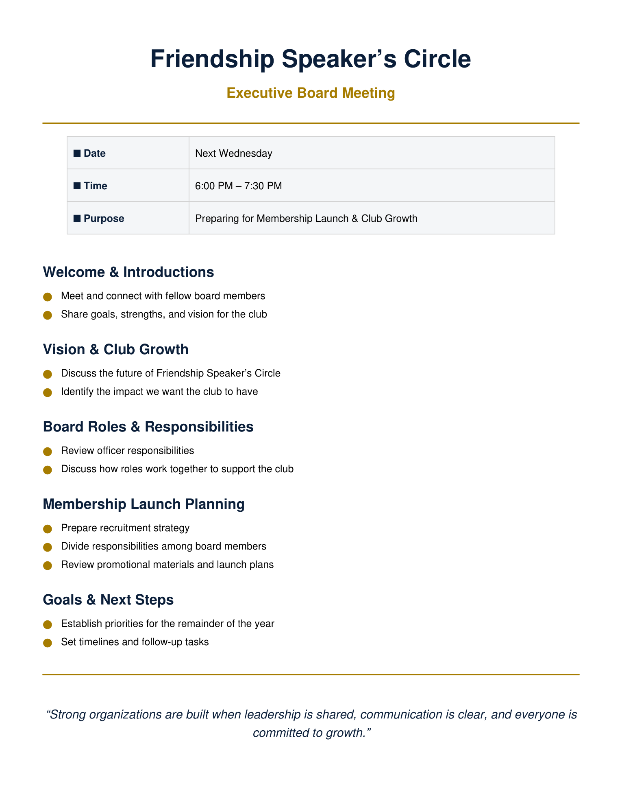
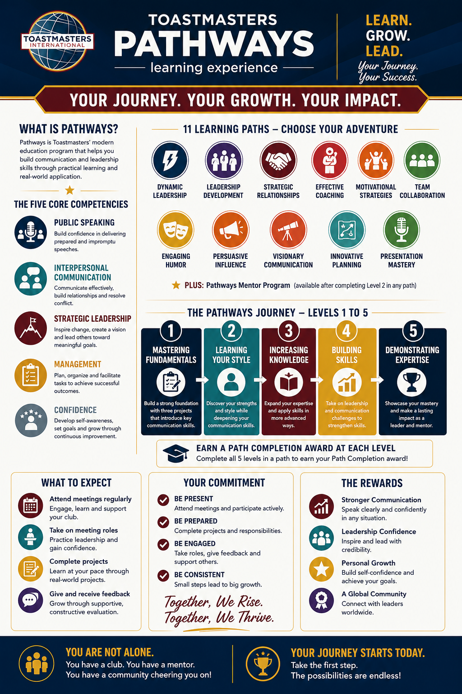

Resource Library
Find what you need without digging through old messages.
The Resource Library organizes club tools, Google Drive folders, trackers, meeting guides, Pathways support, Friendship resources, and official Toastmasters links in one place.
Open Friendship Speaker’s Circle Member DriveFriendship Google login required
Go to Member HubFriendship Google login required
Club Tools
Participation & tracking
These tools help members participate while giving the club a consistent way to track engagement and recognition.
Google Sheet
Role Sign-Up
Choose an upcoming meeting role from the shared Participation & Recognition workbook.
Open Role Sign-UpFriendship Google login requiredGoogle Sheet
Attendance Tracker
Access attendance and participation records in the same shared workbook.
Open Attendance TrackerFriendship Google login requiredGoogle Sheet
Awards Tracker
Review or record member recognition, milestones, and awards.
Open Awards TrackerFriendship Google login requiredGoogle Form
Speech Submission Form
Submit speech details, project information, timing, introduction, evaluator needs, and technology requests.
Submit a SpeechFriendship Google login requiredGoogle Form
Meeting Feedback Survey
Share feedback after a club meeting so leaders can improve the member experience and meeting quality.
Open Feedback SurveyFriendship Google login requiredGoogle Drive
Friendship Speaker’s Circle Member Drive
The protected member-facing home for club documents, templates, guides, and shared resources.
Open Member DriveFriendship Google login requiredWebsite Tool
Club Calendar
See planned club meetings, board meetings, and optional member learning sessions.
View CalendarFriendship Google login requiredWebsite Guide
Member Hub
The dashboard for participation, tracking, support, resources, and upcoming meeting information.
Open Member HubFriendship Google login requiredMeeting Resources
Prepare before you take the floor.
Use these resources to understand the meeting system and prepare confidently for assigned roles.
Google Drive
Meeting Roles Resource Drive
Scripts, guides, templates, and preparation resources for Toastmaster meeting roles.
Open Role ResourcesFriendship Google login requiredWebsite Guide
Meeting Flow & Golden Rules
Review the standard meeting flow, sample 60-minute agenda, handoffs, and club expectations.
Open Meeting GuideFriendship Google login requiredWebsite Guide
Meeting Role Guides
Understand the purpose and expectations of each major meeting role.
Browse Role GuidesGrowth & Pathways
Resources for the journey.
These resources support speeches, mentoring, educational progress, and leadership development.
Google Drive
Pathways Resource Drive
Club guides, speech planning tools, and supporting resources for Pathways progress.
Open Pathways DriveFriendship Google login requiredWebsite Guide
Pathways & Speeches
Understand how the club supports speech planning, educational progress, and Pathways growth.
Open Pathways PageFriendship Google login requiredWebsite Guide
Mentorship
See how the Club Mentor, board mentors, and Toastmasters mentoring work together.
Open Mentorship HubWebsite Guide
Recognition Center
See how the club celebrates growth, service, speeches, milestones, and leadership.
Open RecognitionWebsite Guide
Leadership Team
Meet the executive board and understand officer roles, standards, and accountability.
Open LeadershipWebsite Guide
Start Here
A guided first-month roadmap for new members learning how the club works.
New Member Start HereFriendship Resources
Stay connected to the larger organization.
Quick links back to Friendship Public Charter School and internal staff resources.
Friendship Homepage
Visit Friendship’s public website for network information, schools, updates, and resources.
Open Friendship HomepageFriendship Talent Hub
Access the staff-facing Talent Hub and professional resources.
Open Talent HubFriendship Speaker’s Circle
Return to the homepage to see the full club journey, upcoming meeting information, and quick access tools.
Return HomeFlyers & Club Media
See the story of the club in print.
Promotional, onboarding, leadership, and educational materials created for Friendship Speaker’s Circle are collected here for easy viewing and reuse.

Recruitment
Club Promotional Poster
Our public-facing overview of the club, member benefits, growth, and invitation to join.
View Poster
Onboarding
Member Welcome Flyer
A visual welcome to the Circle, member expectations, our commitment, and ways to stay engaged.
View Welcome Flyer
Leadership
Executive Board Meeting Flyer
A leadership planning piece focused on membership launch, shared responsibility, and club growth.
Open PDF
Education
Pathways Overview
A visual overview of the Toastmasters Pathways learning experience and member growth journey.
View Pathways GraphicPromotion
Club QR Code
Our current promotional QR graphic. We’ll regenerate this after the permanent Vercel website address is confirmed.
View QR GraphicOfficial Toastmasters
Use official sources for official requirements.
Toastmasters International
Club resources can help you prepare and understand the experience, but official Pathways requirements, program rules, educational records, and organizational policies should always be verified through Toastmasters International.
Use our site for: club guidance, preparation, mentoring, local processes
Use Toastmasters for: official requirements, Base Camp, Pathways records, policies
When unsure: check the official source first
Resource library principle: Members should be able to find the right tool in under a minute. As new links and documents come in, they can be added to the correct category without redesigning the entire page.
Officer Resources
Leadership workspace
Club officers can use the protected Officer Hub to reach board agendas, minutes, the Club Success Plan, training, mentor assignments, membership administration, and the Board Folder.
Leadership
Officer Hub
Open the board’s centralized leadership gateway. Sensitive files remain protected by Friendship Google authentication.
Open Officer Hub